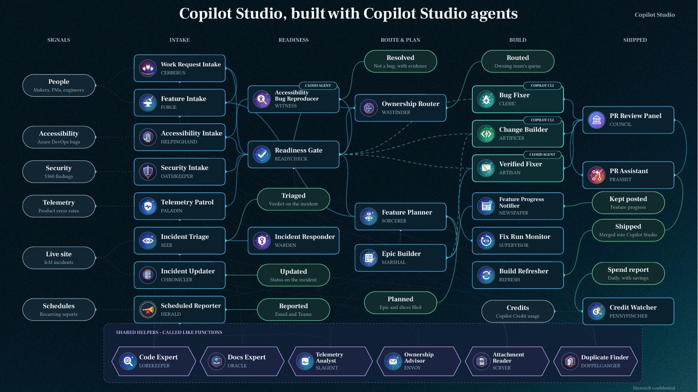
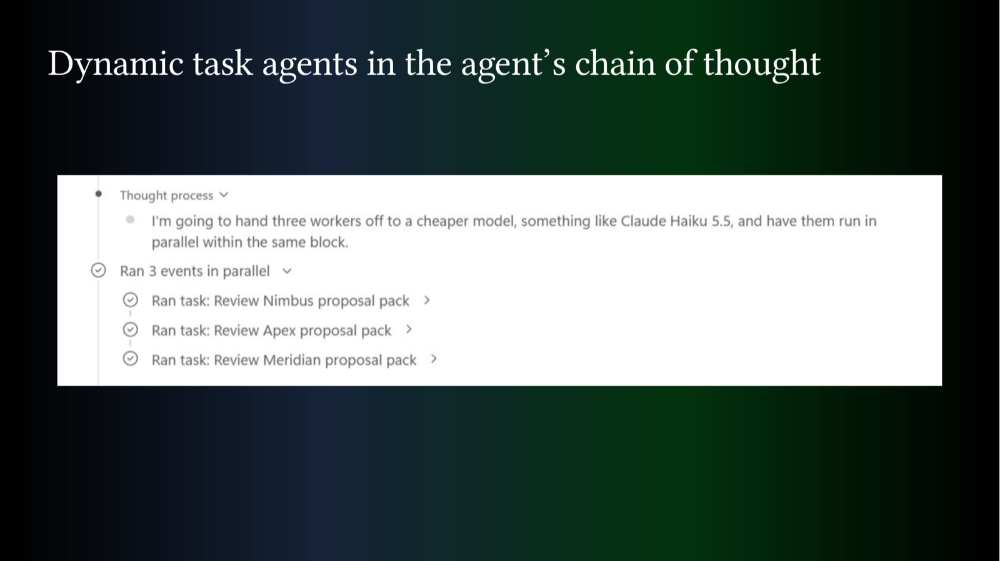
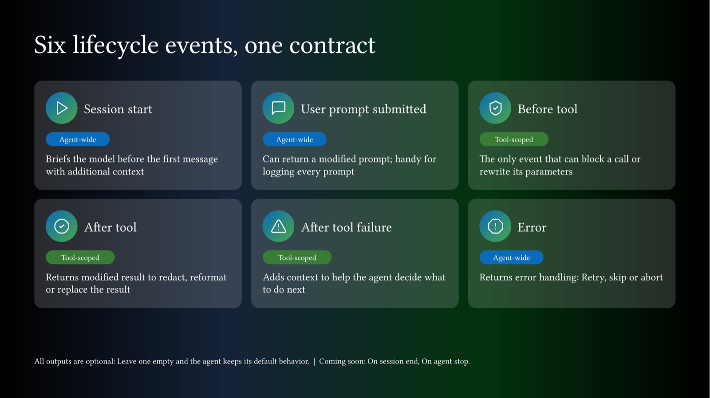

串行拆分提示词，缺乏全局视野与磁盘算力
旧版对话底座将用户意图切碎为固定分支，模型既无法自主重写执行计划，也无法在遇到大体积业务表格时借助本地文件系统与命令行脚本脱敏解析 [1][2]。
在 Microsoft Ignite 2026 架构专场 BRK259 中，Copilot Studio 首席产品经理 Alice Appleton 完整披露了新一代执行内核的换代内幕：团队放弃修补 2023 年面向单轮问答设计的经典底座，转而基于 Microsoft Copilot SDK 与会话级 Azure 隔离容器重铸运行时 [1][2]。在约 500 道真实业务流程离线评测中，新内核将代码分析通过率推高 47.5 个百分点，同时将输入词元消耗压缩 45%，并通过动态任务子智能体、六类生命周期钩子与会话变量，在同一智能体循环中兼顾长程自主推理与确定性合规管控 [1][3]。
01 / Act 01: Copilot SDK & Azure Sandbox
2022 年 11 月至 2023 年初诞生的第一代企业对话底座（Standard Harness），本质上是为弥补早期模型推理短板而设计的“分步提示脚手架” [1][2]。当用户提交复杂请求时，旧底座会强行将其拆解为多条串行子提示词依次喂给模型；这种方式虽便于单步限流与低成本微调，却导致模型始终看不见完整业务目标 [1]。2024 年 12 月 OpenAI o1 开启深度推理范式，2025 年 12 月 Claude Code 与 Cowork 进一步验证了长程工具内嵌推理的威力，迫使 Copilot Studio 团队在“继续给旧底座贴补丁”与“基于 Microsoft Copilot SDK 从零重铸”之间做出决断 [1][2]。
旧版对话底座将用户意图切碎为固定分支，模型既无法自主重写执行计划，也无法在遇到大体积业务表格时借助本地文件系统与命令行脚本脱敏解析 [1][2]。
与 GitHub、Microsoft Foundry、Copilot Cowork 和 Copilot Code 共用同一套可编程运行时接口 [1][2]。团队剥离了上游 SDK 系统提示词中纯软件研发专属片段，补齐跨部门业务流程编排指令，并对上游仓库高频提交逐项做离线评测准入 [1]。
每次智能体会话启动时，Microsoft Copilot Harness 都会在后台动态拉起一个专属 Azure 隔离容器（Execution Sandbox），赋予智能体完整的命令行工具（Shell）、代码执行环境与本地磁盘文件系统 [1][2]。面对数万行财务流水或供应商名录时，智能体直接将数据落盘并编写脚本逐行检索，不再塞爆上下文窗口；与此同时，外层信任边界（Trust Layer）将原始连接凭据严格隔离在容器之外，并对每一次模型请求与响应强制执行数据防泄漏（DLP）、敏感度标签继承与全链路审计 [1][2][3]。在微软整体转型版图中，该执行内核与确定性工作流（提供一致性）及托管微应用（提供结构化界面）共同组成受管业务流程三基石 [2][4]。下方交互导览台整合了本场 38 分 36 秒官方点播流、原版课件直链与三幕实录时间轴 [1]：
点击封面可在页内直接挂载微软 Medius 官方无追踪点播流，或切换三幕标签对照 WebVTT 逐字稿关键节点与原版 PPTX 讲义。
02 / Quality, Cost & Factory Proof
在架构切换前，许多企业担心多步自主循环会因频繁调用大模型而推高账单，但 Copilot Studio 团队在约 500 道源于真实客户场景的离线评测集（统一固定 Claude Sonnet 4.6）上测出了截然相反的曲线 [1][2]：新内核不仅让四大核心能力全面跃升，还将最昂贵的输入词元（Input Tokens）消耗直接压低 45% [1][2]。其底层经济学原理由两股力量共同驱动：一是 Azure 容器沙盒接管了繁重的确定性计算与大文件切片，二是单循环增量上下文拼接使 83%–88% 的输入词元直接命中低价提示词缓存，令成本加权输入词元净降 15%–21%，且工具调用报错后在 84%–91% 的回合中能自主重算恢复 [1][3]：
围绕模型迭代节奏，Alice Appleton 在演讲中透露当前前沿实验室平均每周至少发布一款新模型，而 Copilot Studio 通常在模型发布当天（甚至数十分钟至一小时内，例如大会当周即同步上线 6.2 Sol 与 6.2 Astra）完成评测准入与上架 [1]。为免除创作者频繁比价的负担，平台将 Auto 自动选模设为默认项，在遵循管理员合规策略的前提下，横跨 Anthropic、OpenAI、Mistral 与 SpaceXAI（xAI） 四大厂商沿质量—成本帕累托前沿（Pareto Efficiency Curve）动态路由模型，并提供清晰的三档能力分层供手动指定 [1][2]。
更重要的是，Copilot Studio 研发团队自身构建了一座由 32 个智能体、47 条协作连接、6 个函数式共享专家与 8 类全天候信号源组成的内部软件工厂来开发 Copilot Studio [1][2]。从无障碍缺陷复现（WITNESS）、安全扫描准入（OATHKEEPER）、线上故障定级（SEER / WARDEN）到命令行补丁构建（CLERIC / ARTIFICER）、代码评审委员会（COUNCIL）与每日点数账单巡检（PENNYPINCHER），内部高频实战与三家标杆企业生产落地同步验证了新底座的工程成熟度 [1][2]：
| 实践主体 | 核心业务场景与智能体编排形态 | BRK259 披露的一手成效与价值锚点 |
|---|---|---|
| 微软研发团队 | 32 智能体软件工厂（47 条连接 + 6 个共享专家 + 8 路实时信号源） | 自动分流 ADO 缺陷、S360 安全项与 IcM 故障，生成修复 PR 并输出每日省钱报告 [1][2] |
| 维布络 | AI 卓越中心联合设计销售商机评审（Deal Review）多步推理智能体 | 将零散商机数据直接转化为可决策洞察，把销售团队时间从案头准备释放到赢单谈判 [1][2] |
| 沃利工程 | 项目执行计划（PEP）智能体自动编制结构化初稿并高亮风险点 | 大幅压缩项目组搜集汇编文档耗时，让专家聚焦需求核验、风险评估与方案适配性把关 [1][2] |
| 流明科技 | 基于 Microsoft Copilot Harness 快速构建多类业务项目原型 | 随底层大模型高速迭代平滑演进，彻底告别每次AI技术换代就推倒重写智能体的困境 [1][2] |

清晰展示输入上下文、提示组装、模型调用、响应解析、工具调用与循环控制器的闭环协同 [2]。

横跨信号接入、准入核验、路由规划、构建修复与上线合入六大阶段，底部挂载 6 个函数式共享专家 [1][2]。
03 / Act 02A: Dynamic Task Agents & Protocols
在传统多智能体架构中，创作者每拆分一项子任务就得单独创建、配置、发布并维护一个独立的子智能体（Child / Connected Agent），运维摩擦随规模迅速膨胀 [1]。BRK259 重点演示了现已进入公开预览（预计 2026 年 12 月正式商用）的 动态任务子智能体（Dynamic Task Agents）：主控智能体可在单个智能体边界内，按指令、可复用技能（Skill）或用户临时提示词，在运行时动态拉起多个临时子代理并销毁回收，全程零额外发布负担 [1][2]。
面对多份批量材料或独立调研方向时，主控节点一次性扇出多个并行工作线程同时执行，大幅缩短端到端等待时长 [1][2]。
每个子智能体仅接收与自身子任务相关的纯净上下文切片，彻底避免多份竞争标书或跨项目材料在同一窗口内互相干扰打分 [1][2]。
既支持“旗舰推理主控 + 轻量高效子代理（如 Haiku）”压降批处理成本，也支持“轻量主控 + 按需升级跨厂商高阶模型”攻坚疑难复核 [1][2]。
在第一场实机演示中，Alice Appleton 展示了采购部门的“供应商标书评审智能体”：主模型设为 Auto，系统指令明确写入*“使用独立子智能体分别评审每份供应商提案，并为它们分配更经济的模型”* [1]。当她上传 Apex、Meridian 与 Nimbus 三家供应商提案包后，思维链面板实时呈现：Thought process 自动判定将该批次交由轻量模型 Claude Haiku 5.5 处理，随即在同一区块内并行启动 Ran 3 events in parallel 独立盲审三份标书 [1][2]。数秒后主控智能体汇总结构化对比表，指出 Nimbus 因两项合规检查未通过得分垫底，明确推荐最高分的 Meridian IT Partners 并列出潜在风险与后续步骤；紧接着，Alice 在对话框追加一句*“派生一个 Sol 智能体来挑刺复核这项推荐”*，系统当即跨模型厂商拉起推理模型 Sol 独立审视前序结论并给出复核背书 [1]。
当协作边界超越单个智能体内部时，新底座同样打通了跨平台多智能体生态：**入向连接（现已 GA）**支持在同一方案内混合调用任意遵循 Agent2Agent（A2A）协议的外部智能体、Microsoft Foundry 提示词智能体与 Microsoft 365 Agents SDK 智能体，并复用自定义连接器基础设施穿透本地机房（On-Premises）与虚拟网络（VNet）私有代理；**出向发布（公开预览，预计 2027 年 Q1 正式商用）**则允许一键将 Copilot Studio 智能体暴露为远程 MCP 服务器或 A2A 服务节点，全程通过 Microsoft Entra 委托身份（OAuth 2.0 On-Behalf-Of）携带当前登录用户令牌做细粒度权限核验 [1][2][5]。
04 / Act 02B & 03: Hooks, Variables & Roadmap
Alice Appleton 在演讲中提出了一组精妙的架构对偶定义：如果说“工作流嵌智能体节点（Agent Nodes in Workflows）”是在确定性自动化骨架中局部引入非确定性大模型推理，那么“生命周期钩子（Hooks）”就恰恰相反——它是在非确定性的智能体自主循环中，于固定生命周期切点强制挂载每次必跑的确定性逻辑（扮演新底座中相当于旧版 Topics 的确定性抓手）[1][2]。与由模型自主决定调不调、返回结果仅供模型参考的普通工具（Tool）不同，Hook 由运行时事件百分百触发，且能直接阻断或改写后续执行流 [1][2]：
在首条消息送达模型前触发，统一拉取员工部门、职级或成本中心上下文向模型做前置简报（即将补充 On session end 与 On agent stop）[1][2]。
拦截用户原始输入，可用于全量合规审计日志留存，或按组织规范重写提示词后再交由模型推理 [1][2]。
唯一具备硬阻断与改参权限的事件：在敏感写操作（如创建采购单）执行前校验策略，返回 continue: false 即可当场拒绝调用或覆写工具入参 [1][2]。
在工具原始返回值进入大模型上下文窗口前先行拦截，对敏感隐私字段做脱敏抹除、格式清洗或摘要替换，防止机密数据送入模型 [1][2]。
当外部接口报错时注入排障提示或备选连接说明，辅助智能体决定下一步自愈动作 [1][2]。
捕获智能体级运行异常并确定性返回处置指令：重试（Retry）、跳过（Skip）或立即中止（Abort），且支持配置钩子自身故障时采取放行（Open）还是阻断（Closed）策略 [1][2]。
在第二场采购智能体（Purchasing Agent）对照演示中，Alice 先展示了不挂 Hook、纯靠自然语言提示词读制度文档的隐患：当输入*“为下周入职的新员工订购 8 套标准入职套件”时，模型虽通过翻阅文档发现总价超出额度并拒绝下单，但途中耗费了多轮冗余工具调用与高昂词元，且随时面临理解偏差漏放违规订单的风险 [1]。切换至挂载两个确定性工作流钩子的版本后，Session start 钩子第一时间拉取她的英国成本中心档案与 £2,000（2,000 英镑） 单笔审批红线；当模型尝试调用 Create purchase order 工具时，Before tool 阻断钩子立即算出 8 套总价超标并返回 continue: false, Permission decision: deny，后台零脏单生成；当她改口“那改订 5 套吧”*时，前置钩子校验总价合规并返回 continue: true，采购申请随即平滑送达审批团队 [1]。

思维链清晰记录按成本优化指令选定 Haiku 5.5，并在同一执行块内并发评审 Nimbus、Apex 与 Meridian 提案包 [1][2]。

区分全局级（Agent-wide）与工具级（Tool-scoped）切点；任意输出留空即平滑回退默认行为 [2]。
除生命周期钩子外，新底座还同步引入了经典底座广受欢迎的 会话变量（Variables） 机制：创作者既可将工具入参硬编码为固定值或绑定运行时变量（免除模型重复猜测固定成本中心编号），也能在会话启动时由工作流智能体节点或 Session start 钩子一次性注入用户画像，并按条件动态裁剪工具、知识库与关联智能体的可见范围——例如仅当 Department = HR 时才向模型挂载人力资源专属知识源，从而同时降低幻觉风险与推理词元开销 [1][2]。下表完整汇总了 BRK259 第三幕公布的各项能力商用时间表 [1][2]：
| 架构领域 | 当前可用能力（2026年11月） | 近期交付里程碑（2026年12月 – 2027年Q1） |
|---|---|---|
| 模型路由与动态子代理 | 四大厂商帕累托选模、同日上架新模型（如 6.2 Sol/Astra）、Auto 默认路由、动态任务子智能体公测 |
动态任务子智能体（Dynamic Task Agents）预计 2026 年 12 月正式商用（GA） [1][2] |
| 跨平台多智能体生态 | 入向连接 A2A、Microsoft Foundry 与 M365 Agents SDK 智能体已正式商用（GA）；MCP/A2A 发布通道预览 | 将智能体发布为远程 MCP 服务器或 A2A 服务预计 2027 年第一季度（Q1 CY27）正式商用 [1][2] |
| 确定性生命周期钩子 | 六类生命周期事件绑定工作流公开预览（支持阻断/放行策略与参数脱敏） | Hooks 核心能力预计 2026 年 12 月 GA；2027 年 1 月新增 Task agent complete、Turn complete 事件与直接运行 Python 脚本动作预览 [1][2] |
| 会话变量与持久记忆 | 工具固定入参覆写已上线；跨会话用户级记忆（User Memory）于 2026 年 11 月 GA | 集中式变量引用视图、基于变量的工具/知识动态可见性条件、历史会话检索与**连续自主触发会话（Continuous Autonomous Sessions）**即将推出 [1][2][5] |
05 / References: Official Primary Sources & Related Sessions
57bd65b7-dce0-4d9d-9d20-70a3b284e9bd）与双语 WebVTT 演讲实录（2026-11-20）